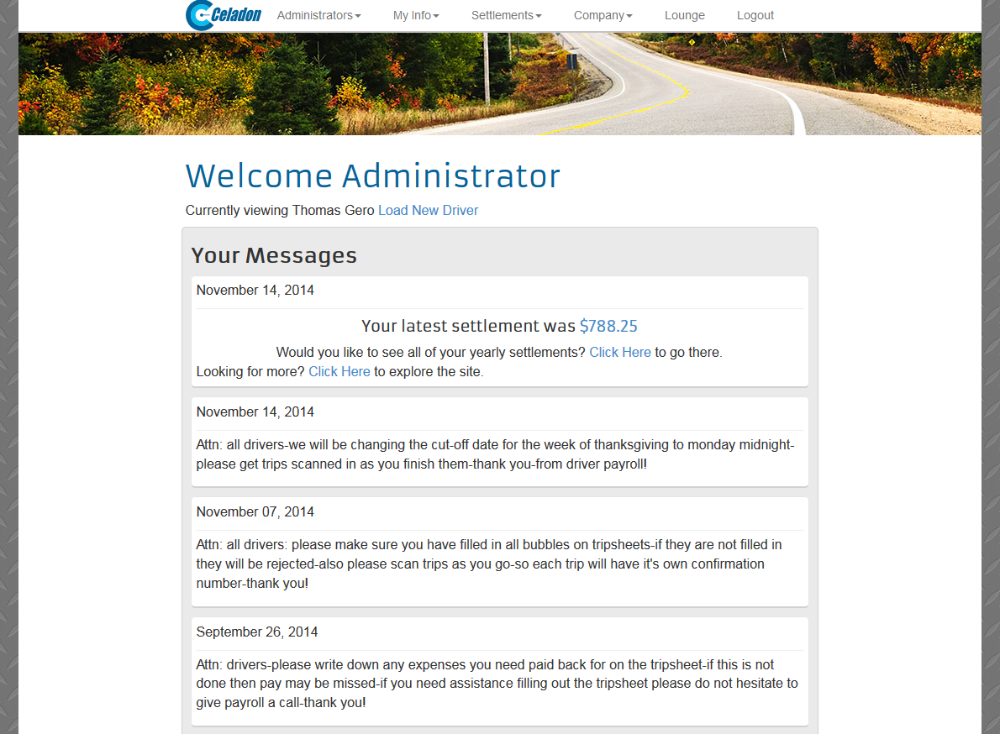
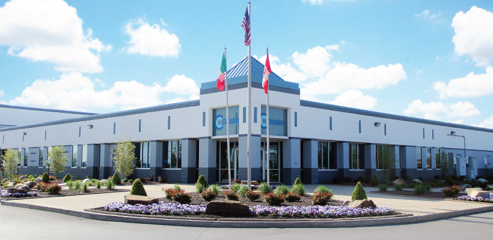
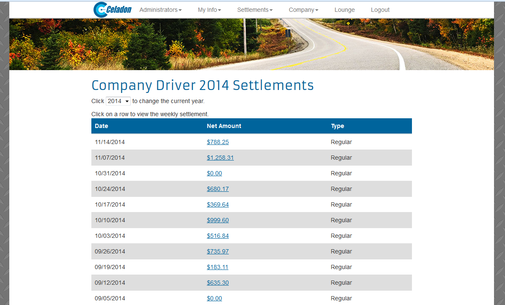
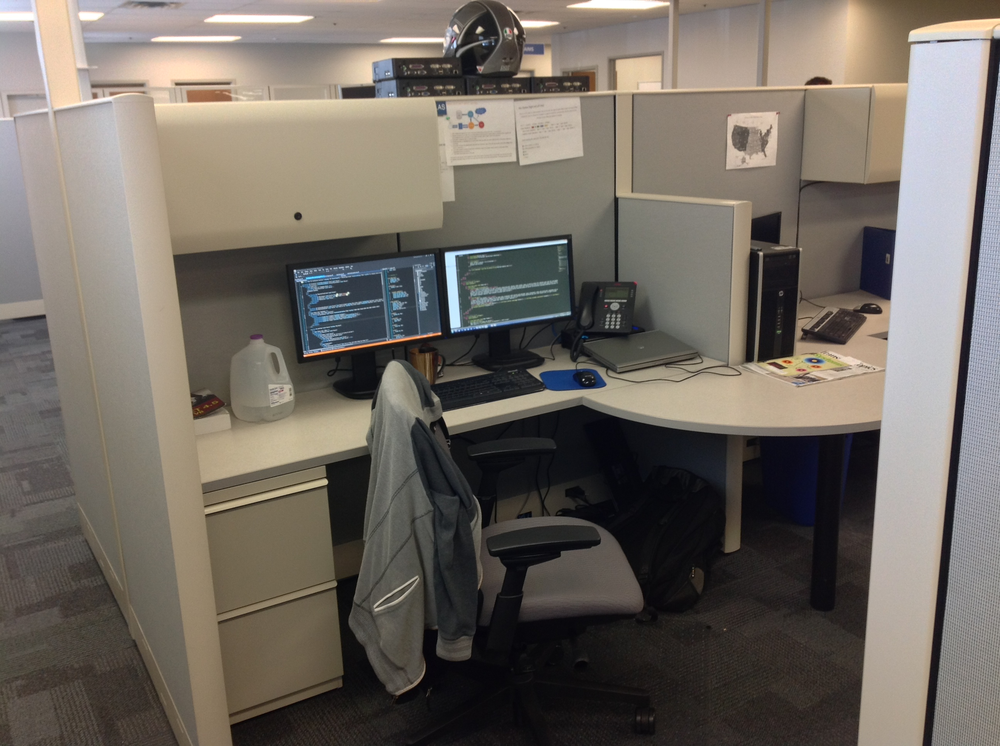
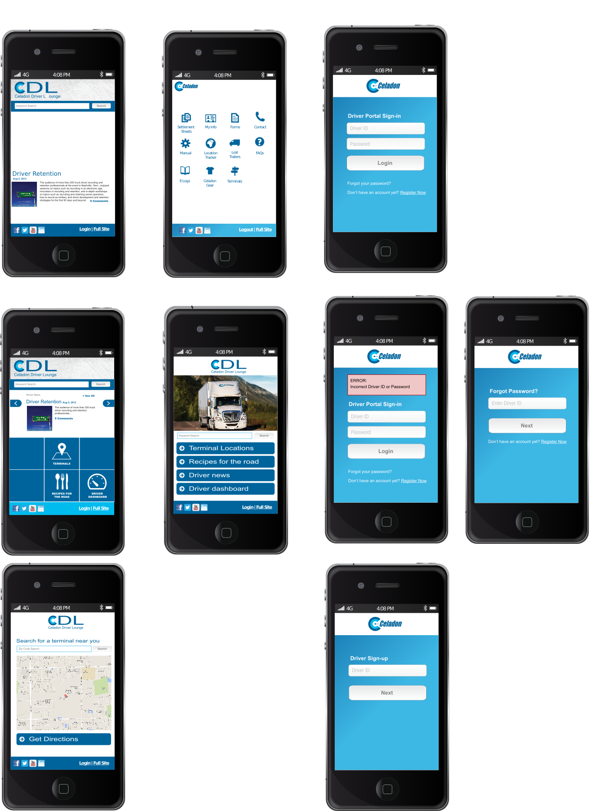

Driver Portal
2013-01-01

Situation
 Celadon Trucking drivers needed a way to view their settlement sheets while on the road.
A settlement sheet is an itemized list of all the fees they accumulated during their trips for a specific time frame. This amount is deducted from their pay for that pay period. The sheet also displays the amount before and after taxes that will be direct deposited into their account. This sheet is required by law because of regulations within the Trucking industry.

The company had a standard non-responsive web page in place for the drivers to login and see their settlement sheet.
On mobile devices this forced them to "Pinch and Zoom" to view the web page. Which they complained about daily to operations.
Challenge
Oddly enough the marketing department, consisting of the Marketing Manager Ally and a Graphic Designer Sara, was in charge of this project.
They created Photoshop user interface layouts of what they wanted the desktop and mobile versions of the Driver Portal to look like. It was difficult for the Marketing Manager and Graphic Designer, who are not developers, to understand that building these pages would require a minimum 8 months of work.
The company data required to display on these pages was stored in a AS400 database. Which would need to be programmed to connect with the Microsoft IIS web server running ASP.Net for the front-end to display web pages.
It would take interdepartmental co-operation to complete this project. The RPG developers would have to create new programming code to populate the fields and forms for the Driver Portal.
Because of the legacy code from the AS400 and the Microsoft boiler plate code required to connect to the IIS web server, the system was over-engineered. Creating more complexity, and more points of failure, adding to development time and cost.
Action

I worked on the development team as the UI Developer with my Manager Brian and the Lead Developer Gabe.
It was my job to translate Photoshop images of what the web pages should look like into responsive HTML and CSS code using the Bootstrap framework. Then converting the pages to ASP.net inside the Visual Studio IDE.
Sometimes I would meet with the Graphic Designer to ask for the height and width of components in the Photoshop file. Because Photoshop files were set to points, not pixels. Which made translating the interface into code difficult.
Other times I asked for Gabe's help converting the responsive HTML and CSS Bootstrap code into ASP.Net because I wasn't as familiar with that language or the Visual Studio IDE.
Result

After eight months of writing, rewriting, and refactoring code, we managed to complete and launch the project on time.
There were a few minor bugs the first week. After that, the project worked great and the truck drivers were able to view their settlement sheets on their mobile devices.